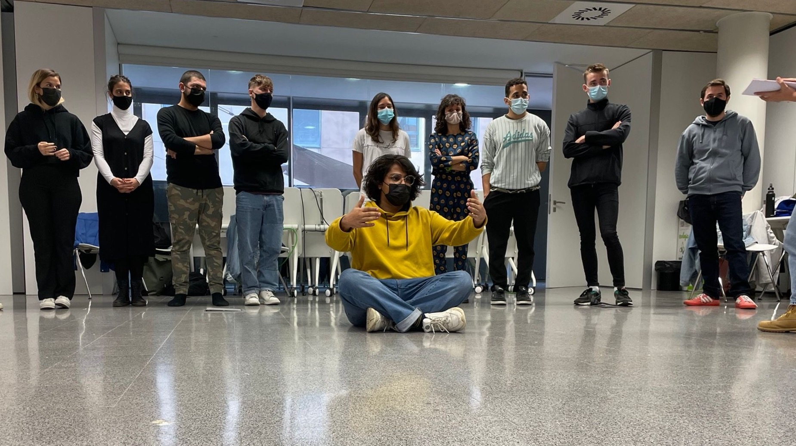
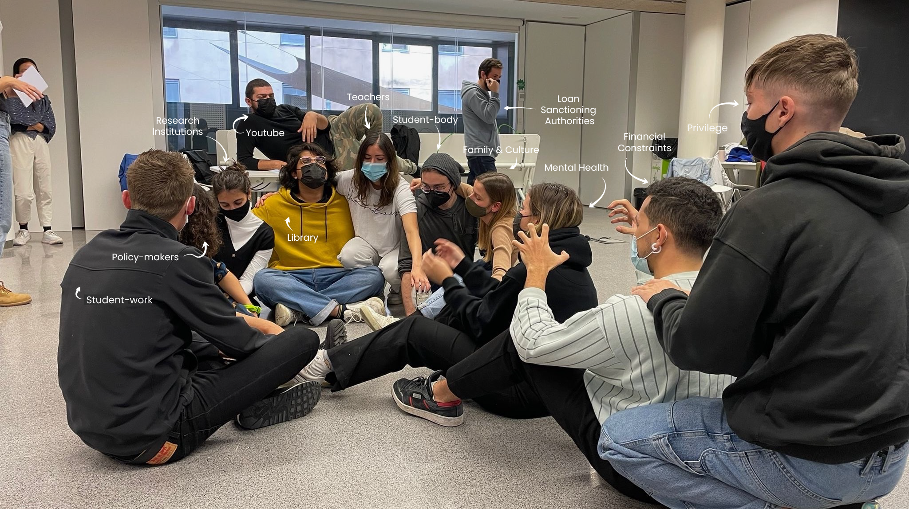
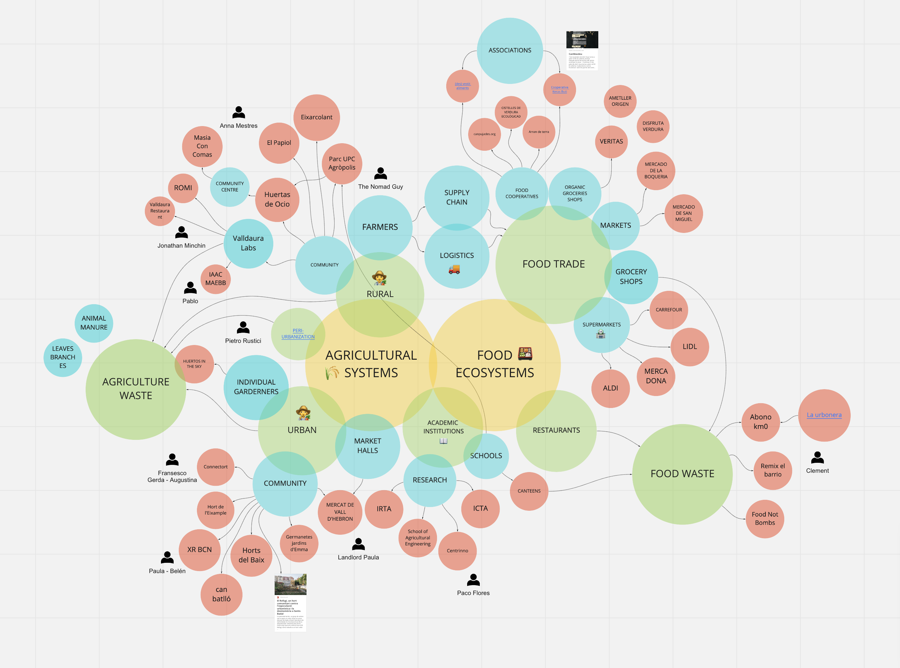
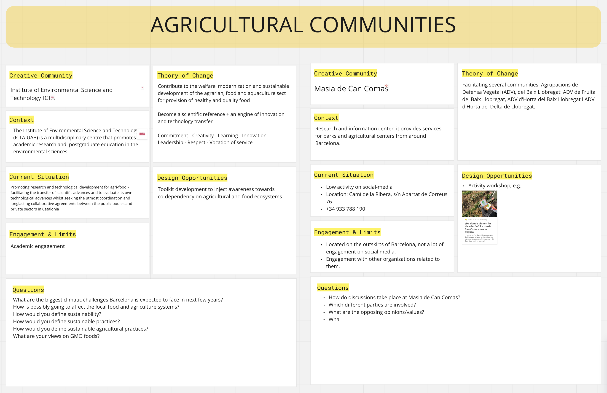
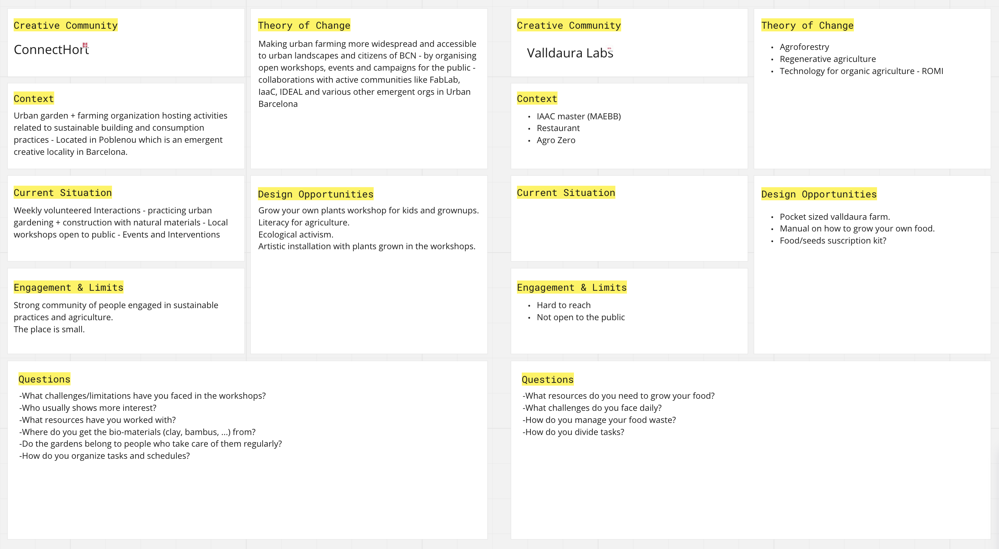
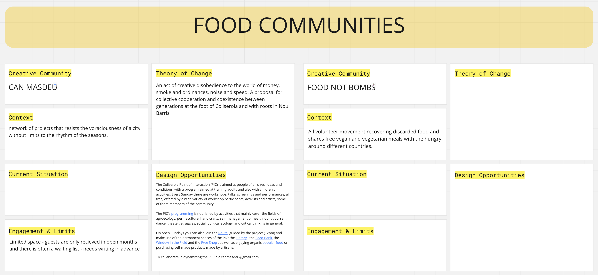
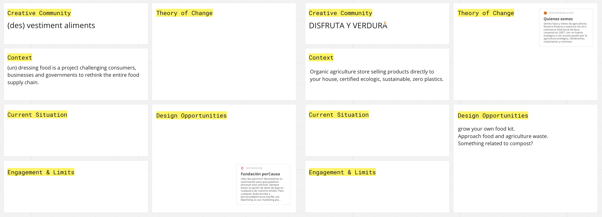

TERM 1
Community Engagement
Solarpunk is a genre and art/design movement that envisions how the future might look if humanity succeeded in solving major contemporary challenges with an emphasis on sustainability, climate change and pollution. This meta group emerged as a reaction to the prevalence of post-apocalyptic and dystopian media alongside increased awareness of social injustices, impacts of climate change, and inextricable economic inequality.
Farming and Agriculture contribute to almost 11% of all green-house gases emissions in an industrial ecosystem. That combined with the manufacturing of the plastic packaging, shipping of consumables and the fuel invested sums up to a quarter of all the greenhouse gas emissions altogether. Agricultural and food-systems were designed to cater abundance and provide plenty of options to consumers. Infact this system isn’t broken and is exactly working the way it was designed to. But if this system was created at some point, we can definitely change and design new systems altogether.
The challenge Solarpunk wants to focus on is creating more awareness about what comes onto your dinner plate everyday, other than the food. We want to help redesign and rethink these systems because how we grow, distribute, and access food will shape the future of our communities, businesses, and planet.
Performative Eco-system Mapping

Image 1 : The form depicting 'Library" in the Already-existent Phase
In the class, we chose to focus on the traditional educational ecosystem for the exercise. The task was to imbibe, express and enact the characteristic, systemic and personal, of a chosen body. My role was to portray an infrastructural body i.e the library. The emotions that I imbibed were inclusivity and seclusion as one. On my personal subjectivity, I was expecting the activity to not yield any constructive insights. But my positionality was instantly challenged and then changed after the exercise. There were multiple but real insights that were derived from the collective form that was constructed by the ‘acting’ group.

Image 2 : The form depicting The Education System in an Emergent Phase
Around our proposed challenge, relative stakeholders and influentials with the same or similar goals were mapped. You can find the map in the figure below.

Fig. 1 : Circular Eco-system Mapping
The two co-dependent and intertwined sectors that our group is concerned with is Agricultural (rural and urban) and Food ecosystems. Some of the communities and organisations that could be central to our research were mapped and researched upon. You can find the information regarding those in the images below.

You can find these maps and information here.